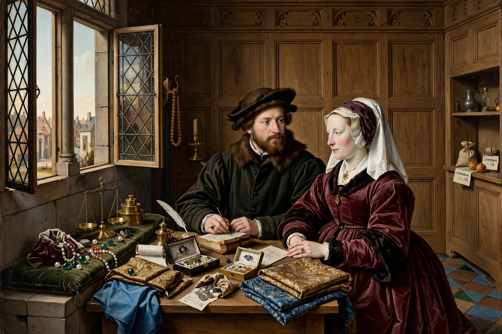

Wikipedia — The Free Encyclopedia

The Northern Renaissance is the term for the Renaissance that occurred in Europe north of the Alps, roughly from the early fifteenth century to the end of the sixteenth. Although connected to the Italian Renaissance through trade, travel and print, it developed its own character: intense surface realism, meticulous detail, landscape, portraiture and domestic scenes, alongside the humanist scholarship of figures such as Erasmus of Rotterdam.
The revolution began in the wealthy cities of Flanders. Jan van Eyck, Robert Campin and Rogier van der Weyden exploited the new medium of oil paint to render textures — fur, glass, jewels, reflections — with unprecedented fidelity, often embedding layers of religious symbolism in everyday settings. Later masters included Hugo van der Goes, Hans Memling, and the visionary Hieronymus Bosch. In Germany the movement produced Albrecht Dürer, who fused Northern detail with Italian theory and became Europe's first print celebrity, as well as Matthias Grünewald and Hans Holbein the Younger. In the later sixteenth century Pieter Bruegel the Elder turned the tradition towards landscape and peasant life.
Northern humanism placed greater emphasis than its Italian counterpart on the direct study of Scripture and on education. Erasmus's editions and satires, Thomas More's Utopia (1516) and Rabelais's writings circulated rapidly thanks to the printing press — invented by Johannes Gutenberg at Mainz around 1440 — which was itself a Northern technology. The period's religious ferment fed directly into the Protestant Reformation, and its art often reflects the era's spiritual anxiety as much as its prosperity.